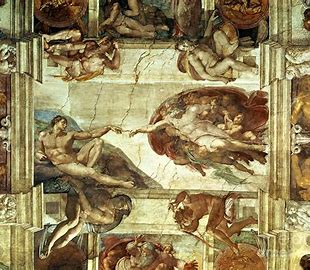

Persistance of Memory
Artist: Salvador Dalí
"The Persistence of Memory" is a surrealist painting created by Salvador Dalí in 1931. The artwork is famous for its melting clocks, which symbolize the fluidity of time and the dreamlike nature of reality. It is one of the most iconic and recognizable pieces in modern art history.
Year: 1931
Medium: Oil on Canvas
Dimensions: 24 cm × 33 cm (9.5 in × 13 in)
Location: Museum of Modern Art (MoMA), New York City
Price: $190 Billion